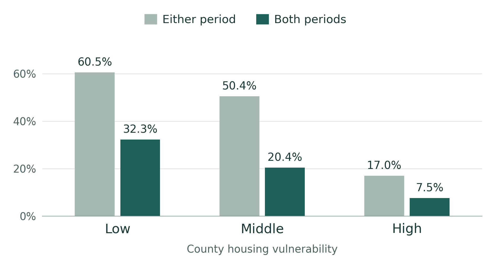

Sole-author preprint · 2026
Beyond construction-debris counts
I set out to compare how much construction debris volunteers recorded before and after five hurricanes. To understand which communities that comparison represented, I examined where cleanup records existed on both sides of each storm. Only 7.5% of county–hurricane pairs in the high housing vulnerability group had records in both periods, compared with 32.3% in the low vulnerability group.
